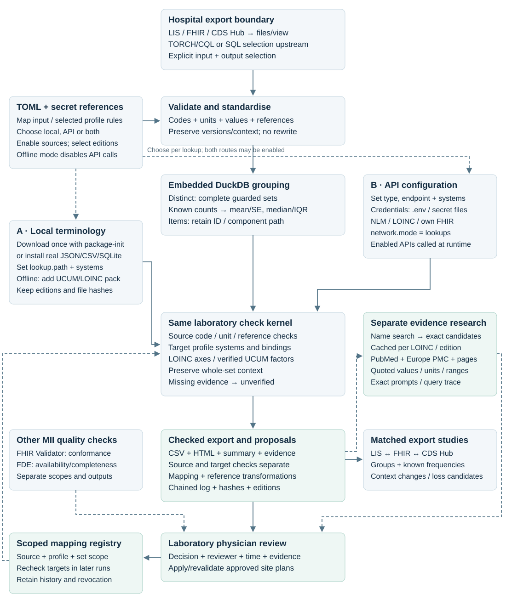
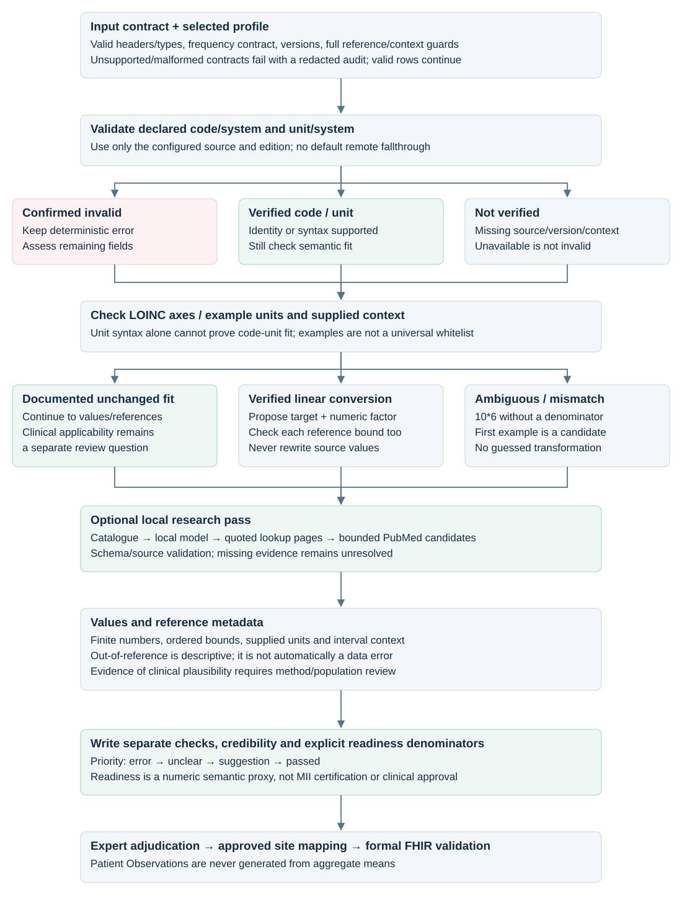

Which data do you have?
Choose a workflow from the source data you actually have. You do not need to know FHIR resource names before starting.
| Your data | Workflow / example | Checks available today |
|---|---|---|
| Numeric laboratory results or aggregate statistics | Quantitative laboratory Observation | Codes, names, units, numbers, reference context and statistics; optional local AI, literature and feedback |
| A product/ingredient description | Medication · product.toml | Terminology, units and declared strength |
| A prescription/order | MedicationRequest · request.toml | Terminology, structured dosage/timing and conditional strength calculations |
| A documented administration | MedicationAdministration · administration.toml | Also rate × duration when constant delivery is explicitly asserted |
| Reported medication use | MedicationStatement · statement.toml | Terminology and dosage structure; not proof of an administration |
Start with the laboratory test below to learn the report, then change the input recipe. No terminology download or model is needed for this first API-based test. Medication supports A1 only; clinical dose assessment, medication AI, literature research and registry reuse are unimplemented. There is no general plausibility workflow for other Observations, diagnoses or procedures.
Three separate questions: does the terminology/quantity set fit? → this checker; does the complete FHIR resource follow its profile? → optional validator; is it clinically correct? → professional review.
Your four configuration choices
| Category | First test | Later choices |
|---|---|---|
| A · Plausibility level | Lookup-only, including deterministic consistency checks | AI-supported lookup; AI-supported evidence |
| B · Input | examples/laboratory.csv | Own CSV, mapped database, FHIR files or server exports |
| C · Lookup/terminology sources | Real public LOINC and UCUM APIs | Manually downloaded BfArM/LOINC files; authenticated or internal APIs |
| D · Clinical domain | Laboratory Observation / MII KDS Laboratory | Medication A1 terminology/quantity checks; laboratory remains the primary workflow |
Use pipeline.toml for these settings. Keep credentials in ignored .env or referenced secret files. No shell exports are needed. Full TOML reference.
The goal is to review the complete semantic set and propose interoperable coding with sources. Membership, dimensional consistency, formal FHIR conformance and clinical correctness are separate conclusions. A clinician decides correctness; this tool never rewrites the source.
First Podman test — from zero
- Install Podman and
podman-compose. On macOS/Windows initialise a machine once if needed, then start it. Run the remaining commands in this repository. - Prepare settings and directories. Existing settings are preserved:
cp -n pipeline.example.toml pipeline.toml cp -n .env.example .env chmod 600 .env mkdir -p ../input local output
The supplied TOML selects examples/laboratory.csv, MII Laboratory 2026.0.3 and real public endpoints. An older TOML retains its previous choices: inspect [input] and [lookups].
- Build the reusable runner, check configuration, then execute:
podman-compose build run-plausibility-check podman-compose run --rm run-plausibility-check config-check podman-compose run --rm run-plausibility-check check --out output/01-lookup.csv
- Open output/01-lookup.html. The synthetic input has 8 rows → 7 distinct review sets / 84 source occurrences. The findings depend on real service coverage; an unresolved set is a result, not an installation failure.
- For another run choose a fresh
--outfilename. Rebuild only after code/dependency updates. Keep reports with their sidecars.
config-check checks local configuration/files, not every remote service. Add --connections to probe selected APIs. Model probing is included only when research is enabled; verify the model separately below. Neither probe proves correct model answers.
Docker instead
docker compose build run-plausibility-check docker compose run --rm run-plausibility-check config-check docker compose run --rm run-plausibility-check check --out output/01-lookup.csv
All later Podman commands have the same Docker form: replace podman-compose with docker compose.
Python with uv instead
uv sync --locked --no-editable uv run --no-sync --env-file .env run-plausibility-check config-check uv run --no-sync --env-file .env run-plausibility-check --out output/01-lookup.csv
Direct script: uv run --no-sync --env-file .env python run-plausibility-check.py --config pipeline.toml. Add --extra postgres to installation for PostgreSQL. Python 3.14 and exact dependency versions come from uv.lock. Runtime details.
For the unchanged laboratory starter, expect 8 input rows → 7 review rows and CSV/HTML files. The sample includes deliberately contradictory reference bounds and unresolved mappings: error/unclear findings can therefore be expected. If no completed report is produced, inspect setup or processing errors. Public service failures remain unknown; they are never replaced with invented lookup results.
A · Choose the plausibility level
| Level | Work performed | Supported domains |
|---|---|---|
| A1 · Lookup-only | Exact source-code/unit membership; names, numeric bounds, code–unit context and supported transformations. No model. | Quantitative laboratory; medication A1 |
| A2 · AI-supported lookup | Real terminology candidates and unit catalogue → local model → exact candidate rechecks. No study queries. | Laboratory |
| A3 · AI-supported evidence | The same terminology pass plus Europe PMC/PubMed abstracts; sourced values/units/intervals where available. | Laboratory |
FHIR validation is an independent switch for complete resources. It can accompany A1, A2 or A3; scalar aggregates cannot undergo full-resource validation. Clinical adjudication follows every level. Medication AI/research, diagnosis and procedure adapters are not implemented.
A1 — run the check
- Select input/profile and terminology in TOML.
- Run
config-checkand resolve input/mapping errors. - Run the check and open the HTML:
podman-compose run --rm run-plausibility-check check --out output/01-lookup.csv
Output: 01-lookup.csv, .html, .summary.json, .evidence.jsonl, .audit.jsonl.
A2 — add AI-supported lookup
- Complete A1 and keep its original report and sidecars.
- Prepare Ollama and the unit catalogue once.
- Run the independent second pass:
podman-compose --profile research run --rm research-evidence research-evidence --scope lookup --report output/01-lookup.csv --out output/02-ai-lookup.csv
Open output/02-ai-lookup.html. This can propose LOINC, analyte/canonical name and unit candidates. Candidates need supporting lookup evidence and clinician review.
A3 — add AI-supported evidence
- Complete A1 and model setup. A2 does not have to run first.
- Select
research.sources=["europe_pmc"], or add configured PubMed. Europe PMC needs no key. - Use the same original A1 report:
podman-compose --profile research run --rm research-evidence research-evidence --scope studies --report output/01-lookup.csv --out output/03-ai-evidence.csv
Open output/03-ai-evidence.html. Evidence is bounded retrieval/extraction from configured services, not exhaustive web research. A study's reported interval may not apply to your method/population. Missing support remains missing.
Add --plan to either research command to see exact prompts and planned queries without retrieval/inference. Python uses uv run --no-sync --env-file .env research-evidence followed by the same flags. Prompts, exclusions and review contract.
B · Select the input and mapping
Working recipes for every supported laboratory input: individual CSV, distinct summary CSV, SQLite, an isolated PostgreSQL example, single FHIR JSON, Bundle, NDJSON and full-resource CSV. The table gives each expected result and output filename.
Distinct laboratory summaries: mean, SD, min, max and units
examples/lab/aggregated.csv has five source summaries → four semantic sets / 90 occurrences. Map value_mean, value_sd, value_min, value_max and each *_unit in its TOML. SD is sample SD (n−1), not SE. If a statistic unit is omitted, its declared measurement unit is assumed and reported. Different statistic units must first be normalised in the export.
Only matching code/name/unit/reference/context sets are pooled, and only disjoint cohorts with sufficient counts/within-group SD permit pooled mean/SD. Two Hb summaries (n=10, mean=14, SD=1; n=20, mean=13, SD=2 g/dL) yield n=30, mean=13.3333 and sample SD≈1.77790 g/dL. Median/IQR are not reconstructed. Observed min/max and published values never automatically define a reference interval.
podman-compose run --rm run-plausibility-check check --config /app/examples/lab/aggregated.toml
Open output/lab-summary.html. A verified linear unit proposal scales every available statistic and reference bound, retaining the source. Numerical comparison with a study still requires compatible specimen, method and population.
Data mapping and target specification are separate. Select the actual resource type, map source headers/columns, and select the guide to check towards. A guide cannot infer the meaning of unknown hospital columns. The runner writes CSV/HTML reports; FHIR/OMOP/CDS Hub output writers are not implemented.
B1 · CSV export — recommended starting point
- Put your export under
../input/orlocal/. Start from the appropriate profile recipe below. - Set
input.type="csv"and the file path. Setgranularity="individual"for rows with IDs, or"distinct"for already aggregated sets. Map a real count column only when its meaning is known. - Edit
[input.columns]: left side is our logical role; right side is your actual column name. - Select
output.mode="distinct"for grouped review or"items"to retain IDs from individual input. Run A1.
[input] type = "csv" origin = "lis" path = "../input/lab-export.csv" granularity = "individual" [input.columns] source_id = "observation_id" analyte_name = "test_name" code = "test_code" code_system = "test_code_system" value = "numeric_result" unit = "unit_label" unit_code = "unit_code" unit_system = "unit_system" reference_ranges_json = "reference_ranges_json" [output] mode = "distinct" path = "output/site-lab.csv"
This is a replacement input/output block, not another block to append. Each mapped column must exist. Preserve local LIS coding as local coding; do not relabel it LOINC to obtain a pass. All reference intervals and qualifiers belong in the reference JSON field. Field contract and aggregate statistics.
B2 · PostgreSQL / CDS Hub / LIS database
- Prefer an export when the hospital server is disconnected. For a direct read, have IT prepare a current-version table/view containing the required semantic fields; the runner does not guess the CDS Hub schema or join vendor tables.
- Use the same column map as CSV. Replace input settings and add database settings:
[input] type = "postgres" origin = "cds_hub" granularity = "individual" [database] DB_SCHEMA = "semantic_review" DB_TABLE = "lab" DB_DSN_ENV = "LAB_DB_DSN"
- Put the actual SELECT-only connection string in
.envasLAB_DB_DSN=…. Use the host reachable from the container and appropriate TLS. TOML holds the reference only. - Run
config-check --connections, then A1. The connection probe also checks selected table/columns. It probes the model only when research is enabled.
The Compose image includes PostgreSQL support. Python needs uv sync --locked --no-editable --extra postgres. For SQLite, use type="sqlite", path="../input/lab.sqlite" and DB_TABLE="lab"; remove PostgreSQL credentials/schema. Reads are read-only. DuckDB performs aggregation internally. TLS, CDS Toolchain TOML and SQL details.
B3 · FHIR resource / Bundle / NDJSON / resource CSV
- Export complete R4 resources, retaining all units, references and medication links. A single JSON resource, Bundle, JSON array or NDJSON is supported.
- Select
type="fhir_file", set its path and usegranularity="individual". Remove scalar column mappings; native FHIR fields are read automatically. - Select the profile, output mode and terminology sources. Run A1; optionally enable full FHIR validation.
[input] type = "fhir_file" origin = "fhir" path = "../input/observations.ndjson" granularity = "individual"
For complete FHIR inside CSV, use type="csv" and only [input.columns] resource_json="resource_json"; do not mix scalar overrides. A Medication reference must resolve inside the export/Bundle/contained data. Missing resources are flagged, not fetched remotely. Database JSON receives semantic checks; export it as a FHIR file/resource CSV for formal validation.
B4 · FHIR server, TORCH/CQL or LIS API
- Use the hospital's supported extraction tool: TORCH/CRTDL or its CQL workflow for FHIR; vendor export for LIS APIs.
- Select resource types, period/status/cohort and required linked Medication resources. Export the actual resources or sufficient scalar fields. A count-only MeasureReport is insufficient.
- Record the extraction criteria/manifest alongside the export. Transfer the export to the local review machine if needed.
- Use B1 for CSV or B3 for FHIR files; run the same A1–A3 checks.
Direct FHIR-server querying, Kafka/message interception and vendor LIS clients are not implemented here. The public terminology endpoint is never a source-patient server. MII/FDPG integration · CQL selection example.
C · Configure sources and explicit downloads
The default checks real public LOINC and NLM UCUM APIs. For production select your licensed/authorised API or local catalogue and pin its edition. Public test-server availability and coverage are not guaranteed. Credentials belong in .env or secret files; TOML contains only references.
| Material | Origin / trigger | Purpose |
|---|---|---|
| BfArM German LOINC/UCUM files | BfArM packages; operator downloads and extracts manually | Labels for the stated base edition. Supplements do not establish all code membership or UCUM syntax. |
| Full LOINC table or official API | LOINC download/API guidance; account/licence as required | Definitions, axes, status and example units. API preferred; local file optional. |
| UCUM validation/conversion | NLM UCUM API; each required query | isValidUCUM establishes syntax; conversion establishes a factor. A failed connection is unknown, not invalid. |
| Unit candidate catalogue | catalog-init: ucum-org/ucum definitions and common-expression spreadsheet | Spelling shortlist. Common expressions are not all valid UCUM expressions. Source hashes are retained. |
| Model weights | model-init: Ollama Ministral 3B | Local inference; persistent named volume. |
| MII/FHIR guide packages | validator-init; pinned FHIR package registry releases | Local Matchbox/HL7 resource validation. |
| Literature | Europe PMC and NCBI/PubMed APIs during A3 | Abstracts/metadata and source-constrained extraction, not a full-text corpus download. |
The LOINC Download API retrieves release archives/metadata and requires its documented authentication. Runtime code lookup uses the separate LOINC FHIR terminology service, or a configured equivalent; download credentials and terminology-service credentials are not interchangeable. TOML/API credential examples.
Manual BfArM setup
- Open the BfArM package page, select the required exact edition and review its conditions. Download it yourself.
- Extract the official FHIR JSON files under
local/terminologies/bfarm-lab/(or sibling../input/terminologies/bfarm-lab/). Retain package metadata/licences; do not place files in tracked examples. - Enable the existing
[lookups.bfarm_lab]table and set its path. Keep primary LOINC and UCUM services enabled. Never relabel a local code as LOINC. - Run
config-check, then A1. Reports show actual file hashes/canonical sources and edition compatibility. A file being configured does not establish it was usable for a particular code.
[lookups.bfarm_lab] enabled = true role = "optional" type = "fhir_artifacts" path = "local/terminologies/bfarm-lab" systems = ["http://loinc.org", "http://unitsofmeasure.org"]
This path is for root pipeline.toml. Nested example recipes use ../../local/…. Replace the existing table, do not duplicate it. The downloaded LOINC 2.83 supplement only applies to that base edition; a different API edition must remain an explicit mismatch. UCUM common-unit translation version 1.5.0 is not the grammar version. File formats and API credentials.
Optional local Blaze in the same Compose stack
After the manual download, examples/lab/local-terminology.toml cross-checks LOINC membership with Blaze, retains the public LOINC API for axes/example units, uses local BfArM label files and NLM for UCUM syntax/conversion. It is a working optional route, not a claim that all BfArM, IFA or SNOMED content is included. Separate authorised complete catalogues/releases are needed for those systems.
podman-compose --profile terminology up -d blaze podman-compose --profile terminology run --rm terminology-init terminology-init --config /app/examples/lab/local-terminology.toml podman-compose run --rm run-plausibility-check package-check --config /app/examples/lab/local-terminology.toml podman-compose run --rm run-plausibility-check check --config /app/examples/lab/local-terminology.toml
terminology-init uploads configured supported CodeSystems/ValueSets from files already present; it does not download BfArM archives. In the tested pinned Blaze 1.9.0 service, LOINC lookup returns membership/display/version 2.82 but not axes/example units. The recipe therefore keeps a full LOINC API alongside Blaze; local membership alone leaves code–unit fit unresolved. Translation supplements remain file-based label evidence; BfArM 2.83 labels do not silently apply to base 2.82. The server database persists in a named volume. Native Python uses http://127.0.0.1:8082/fhir; containers use http://blaze:8080/fhir.
[terminology] check_updates=true enables release-metadata checks at the start of a run for enabled [packages.*] pins. The result is recorded in the report. package-check does the same separately. New releases are announced; no archive is downloaded, no conditions accepted and no pin changed. An unavailable registry is reported without discarding the installed catalogue.
Use strategy="fallback" for source routing or "all" to query every enabled source matching the actual system. Offline review needs complete local data or previously captured real lookup responses for the required queries. Source inventory, credentials and coverage limits.
D · Domain and target profile
Laboratory is the primary workflow. Quantitative laboratory Observation supports A1–A3 and expert feedback. Other Observation domains are not generally covered. Select MII KDS Laboratory 2026.0.3 or base FHIR R4 in [specification]; the laboratory recipes show each input form.
Medication A1 is available for technical terminology and quantity review; further medication development is deferred. Product, prescription, administration and use-statement recipes select MII Medication 2026.0.1. They do not assess clinical dosing or support AI/research/registry reuse. Choose the medication recipe by your data.
Pin the guide/package edition. The guide supplies bindings and structural requirements; source-column mappings, actual terminology coverage and credentials remain explicit configuration. FHIR structural validation is optional and requires complete resources. Medication validation examples can have expected missing-data/coverage findings.
Prepare Ollama for A2 / A3
Default: ministral-3:3b, from Mistral's Apache-2.0 Ministral 3 family. The quantized download is about 3 GB. Start with 8 GiB available VM memory for this model; shared services need more. CPU-only inference in a macOS/Windows Podman VM can take minutes. This is a candidate generator/extractor, not a medically validated adjudicator.
- Keep these settings in the existing TOML model block:
[models.local] runtime = "ollama" base_url = "http://127.0.0.1:11434/v1" container_base_url = "http://ollama:11434/v1" model = "ministral-3:3b" temperature = 0 max_tokens = 2048 timeout_seconds = 600 response_mode = "json_schema"
- Start the service, install the selected model and real unit catalogue, then verify the available model:
podman-compose --profile research up -d ollama podman-compose --profile research run --rm model-init podman-compose --profile research run --rm catalog-init podman-compose --profile research exec -T ollama ollama list podman-compose run --rm run-plausibility-check config-check --connections
- Run A2 or A3 using the original A1 report.
model-initproves model availability; the AI report/trace shows successful, failed or rejected inference calls. - Stop inference when finished; weights remain:
podman-compose --profile research stop ollama
Persistent storage: manual and scripted examples use the same SQC_OLLAMA_VOLUME from .env, default semantic-plausibility-ollama. To reuse an existing store, find it with podman volume ls and set that exact name before starting. Use one service at a time for the same store. Do not use down --volumes or volume pruning to save image space.
Port already in use? Set SQC_OLLAMA_PORT=11435 in .env, then start again. Containers still use http://ollama:11434/v1. Native Python then needs base_url="http://127.0.0.1:11435/v1". Alternatively use native Ollama via the documented host address instead of another server. Native Ollama / LM Studio.
Model weights download once; inference and reports stay local. Public retrieval receives terminology/search terms, not patient IDs or local measured values/reference bounds. Prompts and responses are auditable in .trace.jsonl.
Optional full FHIR validation
Matchbox runs the HL7 validator locally with pinned guide packages. Enable it for complete FHIR resources, before aggregation. For the MII lab CSV-with-Bundle example:
podman-compose --profile validation run --rm validator-init validator-init --config /app/examples/lab/fhir-csv.toml podman-compose --profile validation up -d blaze podman-compose --profile validation run --rm terminology-init terminology-init --config /app/examples/lab/fhir-csv.toml podman-compose --profile validation build matchbox podman-compose --profile validation up -d matchbox podman-compose run --rm run-plausibility-check check --config /app/examples/lab/fhir-csv.toml
Medication FHIR examples are advanced diagnostic inputs that can produce expected MII or terminology-coverage findings; they are not the first installation test. Complete medication validation recipe and expected outcomes. Use its *-fhir.toml in all three configuration arguments. If changing an already prepared guide, add --overwrite to validator-init, then rebuild Matchbox. Packages/snapshots are executable inputs; specification.links are reader references only. Validation outcomes and errors appear separately in the report. Full validation guide and MII backend.
Commit, push and run all nine locally
Review staged files before committing. The example script supplies the TOMLs, starts the services and preserves their volumes.
git status --short git diff --check git add -A git diff --cached --stat git diff --cached --check git commit -m "Add domain examples and transparent assessment reports" git push origin main podman info podman-compose --profile research stop ollama bash tools/run-podman-examples.sh --dry-run bash tools/run-podman-examples.sh
Stop the manual Ollama service only to free its shared model store before the example stack starts. If Podman is stopped on macOS/Windows, run podman machine start. The full run includes local Matchbox, Ollama ministral-3:3b, Europe PMC and PubMed; CPU inference can take many minutes. Open the newly created output/podman-examples-…/index.html, then inspect each report and summary.tsv. Command completion is separate from successful lookups or accepted model answers.
The four active lab scenarios are A1, A1 + full FHIR validation, A2, A3. bash tools/run-podman-examples.sh --dry-run shows the combined script plan. It uses supplied public examples, not your private TOML; add --lab-only for these four. The default nine outputs also include five medication A1 regression examples; --lookup-only selects six A1 reports. Each invocation gets separate reports.
Read the report
| Result | Meaning |
|---|---|
passed | Implemented checks found no issue; not clinical approval |
Laboratory suggestion | A supported proposal is available for review |
Laboratory unclear / medication needs_review | Missing, conditional or unresolved evidence; inspect the open points |
error | A supported inconsistency was found in the source set |
A completed example report may deliberately contain errors. A failed setup/command is a separate outcome. Medication dose_check=review_required is an overall review flag: individual arithmetic can be consistent while strength, product or clinical suitability remain unassessed. inconsistent identifies a dosage/duration/strength error; not_applicable applies to a standalone product. Read the field table: Input value → Method + finding → Recommendation, with separate source and proposal colours. Full status definitions.
Research prints the current article/task and model elapsed time every 15 seconds. CPU inference, especially inside a VM, can dominate runtime. One extraction call covers an article's statistics and intervals; short source-sentence IDs avoid repeating long quotations in model replies. The application restores and checks the exact source text; repeated code/edition groups reuse evidence.
What is an evidence record? One sourced statistic, interval, unit statement or unsupported article discovery. The HTML separates distinct articles retrieved, extracted measurements/intervals and failed/unsupported extractions. A retrieved article alone is not verified numeric evidence. Open report.studies.csv beside the HTML for LOINC, tuple IDs, statistic kind, unit, exact quote, source URL/DOI and extraction state. The completed .trace.jsonl gives prompts, task durations and rejection reasons.
Configuration, methods & audit details below the table records A–D choices, input path/table/mapping, configured defaults, profile, sources, selected model/research scope and output. It excludes credentials and connection strings. Expand How this item was assessed beside each set for its accounting, methods, assumptions, lookup attempts/editions and next improvement step. The CSV column assessment_context_json contains the same item record; the summary contains shared run_context.
Enabled services are listed separately from actual item evidence. AI records distinguish inherited A1 results from new recommendations, and show new model/research activity; cached evidence can be reused. Full FHIR validation is a run-level result unless independently attributed to the item. Old archived reports remain unchanged; rerun for these new fields.
- Source set: check the code, names, units, values/ranges, context and source counts were read correctly.
- Linked data: inspect canonical name/LOINC axes, lookup source and edition. A membership pass does not establish the correct analyte selection.
- Proposal: review suggested code/name/unit, explanation, required transformation and evidence. No verified factor means no executable unit transformation.
- Coverage/gaps: inspect unknown/unavailable evidence, conflicting sources, reference applicability and optional FHIR outcomes. Numeric readiness is not MII certification.
Laboratory CSV exposes lookup_attempts_json; medication uses sources_json and, where present, ddd_references_json. AI adds source_data_json, linked_data_json, recommendation_set_json and quoted evidence. Sources are shown beside the sets in HTML. HTML previews at most 2,000 rows; CSV retains all rows.
Retain the CSV, HTML, summary, evidence and audit together; AI adds its trace. Verify integrity:
podman-compose run --rm run-plausibility-check verify /app/output/01-lookup.audit.jsonl
For a rerun change --out, then point research --report at that new A1 CSV. Existing reports are protected. --log-level DEBUG gives more progress; INFO/WARNING/ERROR are available. Logs avoid credentials and clinical values; the audit remains active.
Reading the field tables: One table per item, one row per data field: Data field | Input value | Method + finding | Recommendation | Source → Proposal. Source colours mean checked (green), unresolved (yellow), or problem (red). Proposal colours mean already correct within the stated check (green), needs review (yellow), or no supported proposal found (red); grey means not applicable. A unit conversion always needs review, including its effect on statistics and reference bounds. “Approved mapping ready: 0 / N” remains separate until a scoped clinician decision is reverified.
Numbered sources sit beside findings. Expand Sources & details for quotations, reasons, original fields and lookup attempts. Configuration and methods are collapsed after the items. Medication uses the same table for product coding, form, strength, dosages, timing and duration; AI/studies and clinical dose assessment remain unimplemented. Colour meanings and examples.
Clinicians record decisions in a separate review copy. Laboratory review-import creates a scoped registry; future checks reverify targets and transformations before reuse. Review fields and reuse steps. Medication reuse is not implemented.
Architecture and decisions
These diagrams describe the quantitative laboratory workflow. The existing medication A1 path is documented in its separate recipes.


Input → grouping → CSV/HTML · Position alongside MII quality tools · Code, versions and tests · LIS–FHIR–CDS Hub comparisons

Medication A1: choose data, run one example and interpret the report.